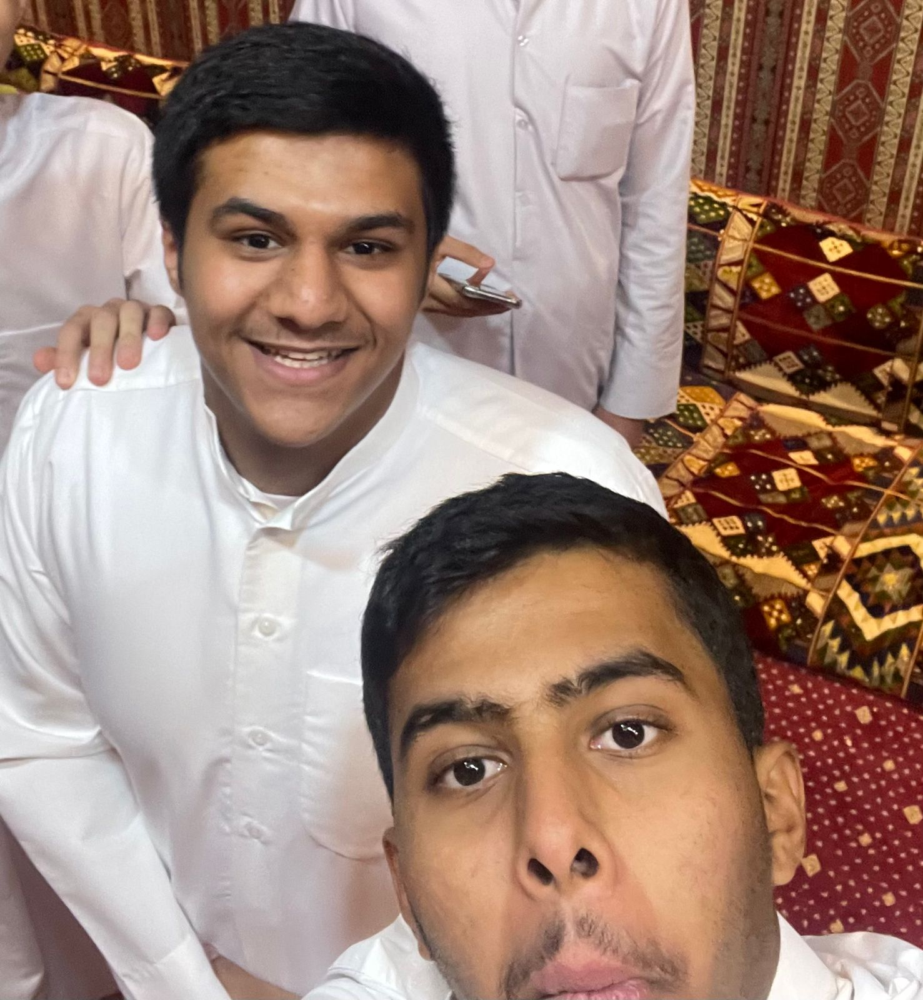
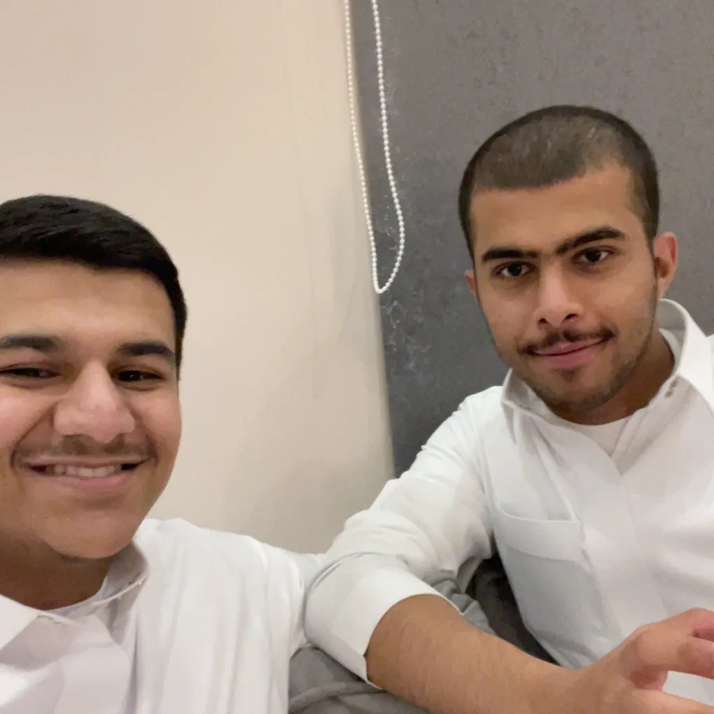
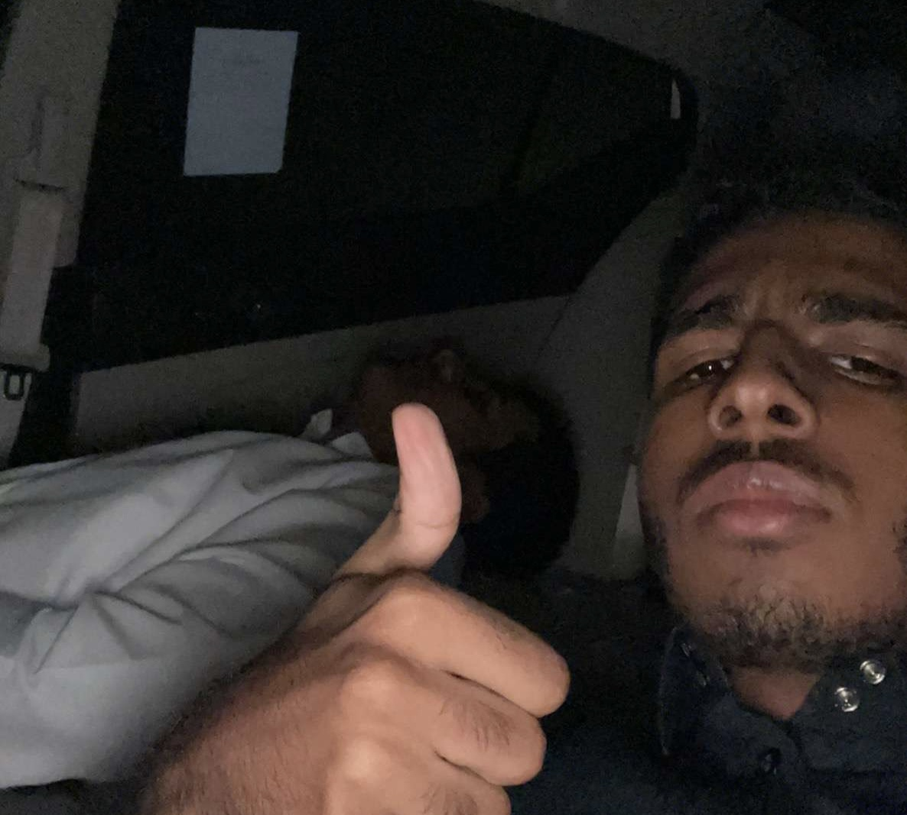
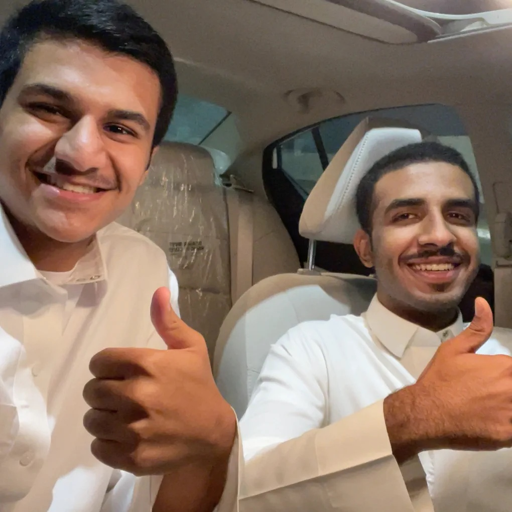

The Best Man Alive
ABDULLAH ALGHANIM
Who Is ABO_GHANIM1
Abdullah Alghanim is a man that live in Saudi Arabia specifically in Al-Qassem region (the controller of the world), to be more spicific ABO_GHANIM1 lives in Unaizah (the best city after Makaa and Almadinaa), so Unaizah (Arabic: عنيزة ʿUnaizah) or officially The Governorate of Unaizah (also spelled Onaizah, Onizah, or Unayzah; Arabic: محافظة عنيزة Muḥāfiẓat ʿUnaizah) is a Saudi Arabian city in the Al Qassim Province. It lies south of the province capital Buraydah and north of Riyadh, the capital of the Kingdom of Saudi Arabia. It is the second largest city in Al-Qassim Province with a population of 163,729 (2010 census).
Historically, Unaizah was an important stopping point for Muslim pilgrims coming from Mesopotamia (now Iraq) and Persia (now Iran) on their way to Makkah. Many scientists and historians believe that Unaizah was inhabited hundreds of years before the spread of Islam, citing its reference in numerous poems from some of the most important poets of pre-Islamic Arabia such as Imru' al-Qais.and below is some pictures of Unaizah and the natural desert and plants in it.
Unaizah's common plant is Alghada that is very useful to the wheather of Unizah and it or Al-Qassem generally are famuse in a date fruit and it is one of the producer and from the biggest producer in the world, so Al-Qassem only produce in the sesson of the date fruit 300 tons annually from 8 million palm tree, and the summation of the money that enters in ONE SESSON is about ONE BILLION RYAL.
Here is some pictures of Unaizah:-

If you want to know more about Saudi Arabia and Unizah here some links:
Friends Of ABO_GHANIM1
To be honest to you readers and to myself as ABO_GHANIM1 I do not have much friends I have friend ofcourse but they are not alot I think because of my spicilaty as a computer engineer I do not have a time and all the time that I spind it I pass it with myself, so that is the reason but when I was in the school I have alot of friends but almost of them go with their paths without any problem with me, so I can say that my social relationships is perfect alhamdolliah, so now who are my very very closest friends.
-
Abdullah Almarzugy
The best friend to me is Abdullah almarzugy. He is very friendly and have a passion to be a malioner in 2030 and I think ishaallah he will achieve his gaol. Abdullah studied with me in every level from the first grade except when we entered to the college he entered to the agriculture college.
Here is some pictures of Abdullah and me together:
  -
Abdulaziz Alouni
To be honest my friend Abdulaziz is same as my friend Abdullah they are my best friends and I love them in the same level. The first time that I met Abdulaziz is in halagah he was very smart and funny and after we finish halagah we make prankes to each other. Also, we were study in the same school in second grade but in the college we splited, he will enter to the midical branch and will be a doctor inshaallah.
Here is some pictures of Abdulaziz and me together:
 
Education Of ABO_GHANIM1
Muaath bin jabal was the first school I ever entered and it was very nice. Teachers in muaath bin jabal were patient with us even when we annoying student. I do my best in that school and I left it with good marks. In the last year I left muaath bin jabal and I entered to zaid bin thabit.
The reason that I entered to zaid bin thabit is that one of thr teachers that teach an important course did not come in any day and I think it is one of the best dictions I ever make because zaid bin thabit is very beautiful.
In the second level of my studying journey, I entered to hapha bin asem and it was the best level of study and the best school in my entire journey.
In the third level I entered to alshubaily school and it was good but the COVID-19 spoiled it, so we study in our home.
Then I entered to PYP because I want to go to electrical engineering but when I study in PYP I loved the coding and that stuff, so I enter to a specialty that combine the coding and computer sciences and electrical engineering which is computer engineering.